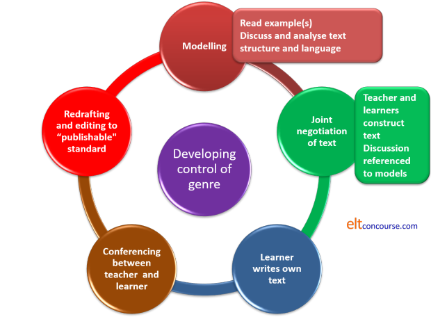

Teaching writing: the essentials

The following is premised on the understanding that you have already followed the first part of the guide to writing skills. It'll be harder and make less sense if you haven't.
 |
Three approaches |
 |
Approach 1: product |
This is a traditional text-based approach which relies on the
presentation of a model and its imitation or adaptation. As the
name suggests, it is focused on the outcomes of writing, not how the
outcomes are achieved.
The approach seeks to synthesise the components of the writing skill by
focusing on each in isolation first. So we move, e.g., from the
mechanics of the alphabet and punctuation systems, through a focus on
syntax and lexis including considerations of cohesion and style until we
have trained our learners to combine their knowledge of each to be able
to produce a coherent, effective and accurate text. It can be
visualised as an incremental system:

Typically, a writing lesson following this approach will start with the analysis of a model (not always a complete text), looking at how an expert writer handles, e.g., lexical chains to create cohesion in a text and then move to the creation of a parallel text by the learners in which they attempt to apply the same skill to produce their own finished text. Typically, a series of lessons will be undertaken focusing on the elements of the system above in the same kind of way.
Naturally, the approach has been criticised for being atomistic and focusing too narrowly on systems at the expense of the focus on skills and subskills. It remains, however, a common approach in many coursebooks and classrooms because it allows for the content to be focused on separately from the form and structure. In other words, it breaks down a complex skill into teachable and learnable sections, recognising that learners need to deploy a range of language knowledge to achieve the final text.
 |
Approach 2: process |
Again, as the name suggests, this approach focuses the subskills of
writing such as planning, drafting and polishing and is cyclical in
nature.
Based on research into how good writers construct texts, it breaks down
the writing process into a series of repeatable stages. First, for
example, expert writers generate ideas in a random way and then evaluate
each on the basis of relevance and importance. Then, the writer
will plan, draft and re-evaluate before producing a final text.
Often the process, or parts of it, is repeated until the writer is
finally satisfied with the product. It can be visualised as a
process rather than an incremental system:

As the diagram is intended to show, the draft-evaluate-re-write part of the cycle may be frequently repeated. Later re-writing is reduced to polishing.
Typically, a single lesson in this approach will not include all the phases. Learners may work on a text over a series of lessons starting with the idea-generation phase and culminating in the finished article at a (much) later date.
 |
Approach 3: genre |
This approach draws on the work of genre analysis and, like the
product approach, frequently uses model texts as the subject of
analysis, imitation and modification. There, however, the
similarity ends.
This approach focuses on three fundamental aspects of all texts:

A genre approach will typically start by getting the learners to
analyse a text in these terms before going on to see how the types of
language used contribute to the nature of the text (or are, rather, a
product of it).
There is more on this in
the guide to genre on this site. Here, it will be enough to
present one example.
In a text intended to tell an anecdote in writing to a friend (a
Recount), we will
find that the text is organised in four steps:
- Orientation: in which the writer sets up the
topic (establishes the Field)
There's a guy, John, I know at work who always tries a bit too hard. - Record of events: in which the writer says what
happened
Yesterday he got too pushy and managed to upset a really important client. We nearly lost the contract but the boss stepped in just in time and calmed everyone down. - Reorientation: rounding up
The client eventually saw that nothing bad was meant and said he was happy to go on using us. - Coda: personal evaluation
I hope John's learned his lesson and will be a bit more diplomatic in future or we'll all be out of a job!
This is how this might happen in the classroom (over a series of lessons, of course).
- The learners and teacher together read and analyse
a model text like the one above and:
- identify the staging as well as the structure and the language used
- look at the form of the language and see if the text is particularly formal (note the use of, e.g., out of a job rather than redundant and the use of '!')
- look at the sort of verbs that are used. In this case, most of the verbs are material and behavioural processes (tries, got pushy, upset, lost, stepped in etc.)
- analyse other elements of the language (e.g., the use of circumstances such as in future, eventually, yesterday, just in time etc.) and so on.
- The teacher and learners work together to produce a new text, referring back to the model as they go along.
- The learners write their own text based on the model and the jointly constructed text.
- The learner(s) and the teacher discuss the text's effectiveness and redraft it.
- Finally, the learners re-draft and polish their texts.
There's a bit more on this (applicable to both speaking and writing and concerned particularly with recounts and narratives) in the guide to the function of relating experiences.
Graphically, the teaching-learning cycle looks a bit like this
(adapted from Burns, 2001, after Hammond, 1990)

The strength of the approach, it is claimed, is that all texts
in the same genre follow the same staging and all will exhibit the same sorts of verbal
processes and circumstances etc. Once this is learned, then, the
student can go on to construct, for example, conventional recounts in a variety of
styles based on any set of material facts.
Other genres, such as discussions, narratives, expositions, instructions,
explanations, information reports etc., which will have their own
characteristics, can be tackled in the same way. Discussions, for
example, will need learners to focus carefully on modality (it may
be the case etc.) and on hedging (it is arguable that, many
would conclude etc.) as well as on the conventional staging of such
texts.
There is a guide to teaching for
and against discussion texts on this site, linked below.
For more on genre, see the link below.
 |
Combining approaches |
It can readily be seen that these approaches are not mutually
exclusive. Elements of the product approach, such as the focus on
structural aspects of language can form part of the process approach
when students evaluate what they have written as a first draft and such
a focus is legitimately part of a genre approach when the language is
being analysed.
A genre approach can also be usefully combined with a process approach
or a product approach.
There is also a lesson for B1/B2-level learners about how to write a
paragraph, linked below.
Take the mini-test to check your understanding.
| Related guides | |
| writing | the first part of this guide |
| writing for and against discussions | for a guide in the in-service area to one form of writing frequently needed in academic, business and other contexts |
| writing a narrative | for a guide to one form of writing frequently needed in general English contexts |
| a lesson plan | a writing lesson plan for teachers which, more or less, follows a genre approach to writing a report |
| writing a paragraph | a lesson for B1/B2-level learners |
| cohesion: essential guide | the basic guide |
| genre | for the in-service guide to what genre is with some examples of how we identify different ones |
| assessing writing | for the in-service guide to assessing our learners' writing abilities |
References:
Butt, D, Fahey, R,
Feez, S, Spinks, S and Yallop, C, 2001, Using Functional
Grammar: an explorer's guide. Sydney: NCELTR
Burns, A, 2001, Genre-based Approaches to Writing, in Candlin,
C and Mercer, N (Eds.), English Language Teaching in its Social
Context. Abingdon, UK: Routledge
Halliday, M, 1994, An introduction to functional grammar: 2nd
edition. London: Edward Arnold
Tribble C, 1997, Writing. Oxford: Oxford University Press
Other references you may find helpful:
Cushing Weigle, S, 2002, Assessing Writing, Cambridge: Cambridge
University Press
Harmer, J, 2004, How to Teach Writing, Harlow: Longman
Hedge, T, 2005, Writing, Oxford: Oxford University Press
Hughes, R, 2005, Exploring Grammar In Writing Upper Intermediate and
Advanced, Cambridge: Cambridge University Press
Hyland, K, 2003, Second Language Writing, Cambridge: Cambridge
University Press
Hyland, K, 2002, Teaching and Researching Writing, Harlow: Longman
Kroll, B (ed.), 1990, Second Language Writing: Research Insights for the
Classroom, Cambridge: Cambridge University Press
Raimes, A, 1983, Techniques in Teaching Writing, Oxford: Oxford
University Press
Shemesh, R & Waller, S, 2000, Teaching English Spelling: A Practical
Guide, Cambridge: Cambridge University Press
Spiro, J, 2004, Creative Poetry Writing, Oxford: Oxford University Press
White, R & Arndt, V, 1991, Process Writing, Harlow: Longman